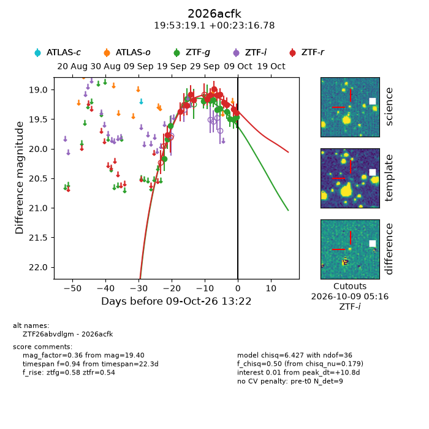
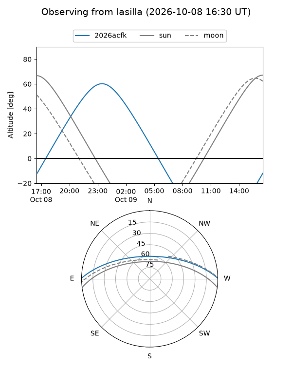
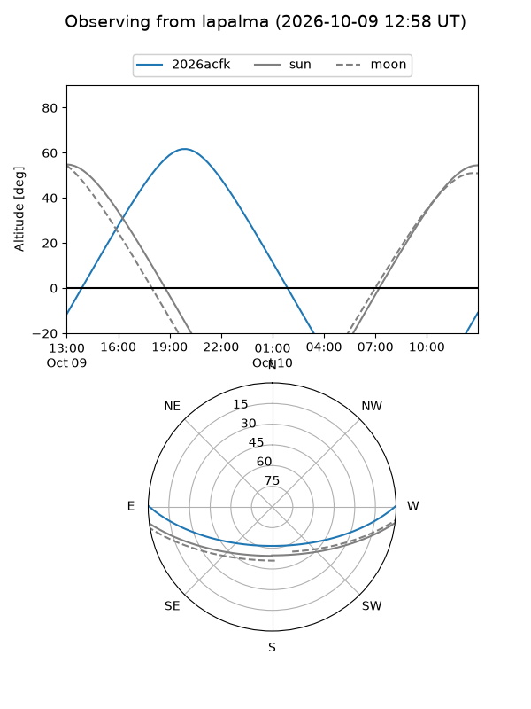
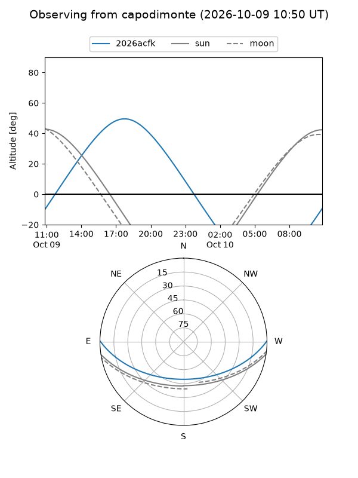
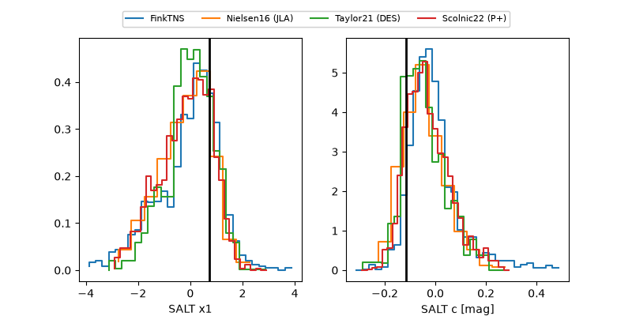

2026acfk
Target 2026acfk at 2026-10-09 13:25
Aliases and brokers:
FINK-ZTF: ztf.fink-portal.org/ZTF26abvdlgm
Lasair-ZTF: lasair-ztf.lsst.ac.uk/objects/ZTF26abvdlgm
ALeRCE-ZTF: alerce.online/object/ZTF26abvdlgm
YSE-PZ: ziggy.ucolick.org/yse/transient_detail/2026acfk
TNS name: wis-tns.org/object/2026acfk
Direct TNS query: direct search
alt names
ZTF26abvdlgm (ztf,fink_ztf)
2026acfk (tns,yse)
Coordinates:
equatorial (ra, dec) = 298.3296,+0.38799
equatorial (HMS+DMS) = 19:53:19.10,+00:23:16.78
galactic (l, b) = (40.4770,-13.55026)
Flags:
peak dt: +10.8
Photometry:
last ztfg=19.46, ztfr=19.40
13 ztfg, 14 ztfr detections
Lightcurve

Visibility



Additional plots
